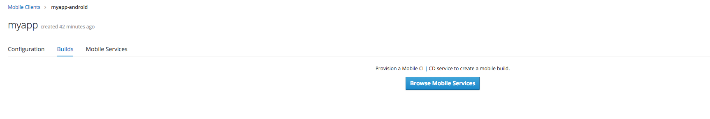
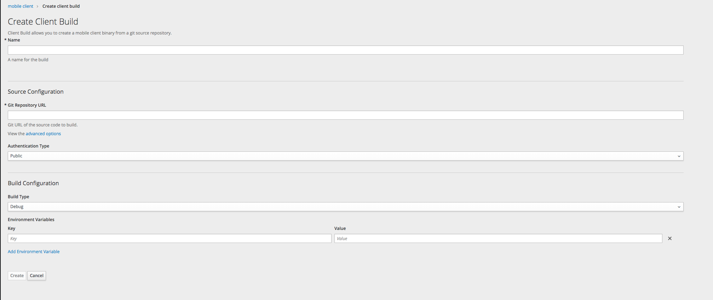
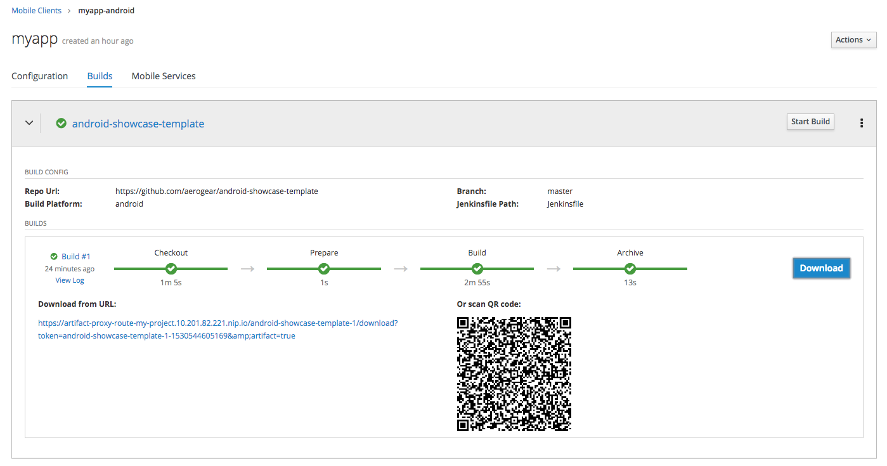

Mobile Clients in OpenShift
Introduction
Mobile Clients in OpenShift allow you to perform Cloud Native Mobile App Development using OpenShift as the back end for your mobile apps. A Mobile Client is a representation of the mobile app that you are developing locally. Mobile Clients allow you bind your mobile app to mobile services such as Identity Management, Push Notifications, Mobile Metrics and others. This makes many of the common tasks associated with mobile development much easier and quicker to implement.
A configuration file named mobile-services.json acts as the link between your Mobile Client in OpenShift
and your local app in development. This configuration file is used to initialize the AeroGear SDK in your mobile app
and to connect to the back end Mobile Services you have provisioned on OpenShift.
Registering a Mobile Client
To use services with a mobile app a Mobile Client must first be created to represent the mobile app in OpenShift. Once the Mobile Client has been registered it can then be bound to services to allow the mobile app to interact with these services.
For information on how to register a Mobile Client in OpenShift, see Getting Started.
Viewing Mobile Services
In order to use services with a mobile app, the Mobile Client associated with the app must be bound to services. In the list of Mobile Clients in the Overview view there is a summary of the number of services available to be bound to the Mobile Client and how many services have already been bound to the client.
The Mobile Services tab in the Mobile Client view shows the provisioned services that are available to be bound to the Mobile Client. If a service has not yet been bound to a Mobile Client a binding can be created by selecting the Create Binding button.

If a service is bound to the Mobile Client then details about the binding between the Mobile Client and the service can be seen when expanding the service. These details differ for each service.

Once a service has been bound to a Mobile Client the configuration for the Mobile Client will be updated in the Overview view and the Mobile Client Configuration view. This configuration is used by your app to interact with the bound services.
For more information on binding Mobile Clients to services, see Getting Started.
Building Mobile Apps
The Builds tab in the Mobile Client view allows you to view the previous builds of the app, and triggers a new build of the app.
Provisoning a Mobile CI/CD Service
In order to build the Mobile Client app, you first need to provision a Mobile CI/CD service. If the service is not provisioned, use the link provided on the screen to browse all the available mobile services and provision a new Mobile CI/CD service.

For more details about how to provision the Mobile CI/CD service, please check Mobile CI/CD service guide.
Creating a Build
After the Mobile CI/CD service is provisioned, you need to create a new build config for the Mobile Client. You need to provide more information about the mobile app here depending on the platform. For example, the repo of the source code, the type of the build, the keys used to sign the app etc.

For more information about how to configure the build config, please check the build config section of Mobile CI/CD.
Starting a Build
Once a build is configured, you can start a new build. You will be able to view the progress of the build from the OpenShift UI and access the full build log.

Downloading and Installing Apps
You can use the OpenShift UI to deploy a mobile app by downloading the binary directly to the mobile device. This binary can be downloaded for any successful build in the build history.
Once the build has completed you can then press the Download button and you will be presented with a QR code. Applications to scan QR codes are available in Google Play for Android or the App Store for iPhone. Once the QR code has been scanned it will open the download URL in the device and the application will download.

If you do not have a QR code scanner you can also download the artifact from the URL in the openshift web console. Once downloaded connect a device to your local machine.
-
For iOS applications open XCode and navigate to Window > Devices and Simulators. Here you can install your mobile application by pressing
+button at the bottom, then choose your download IPA file for installation. -
For Android applications move the APK file into the device directory. On your device locate and select the APK file and select install.
You may need to enable the installation of apps from unknown sources on Android devices before installing from an APK.